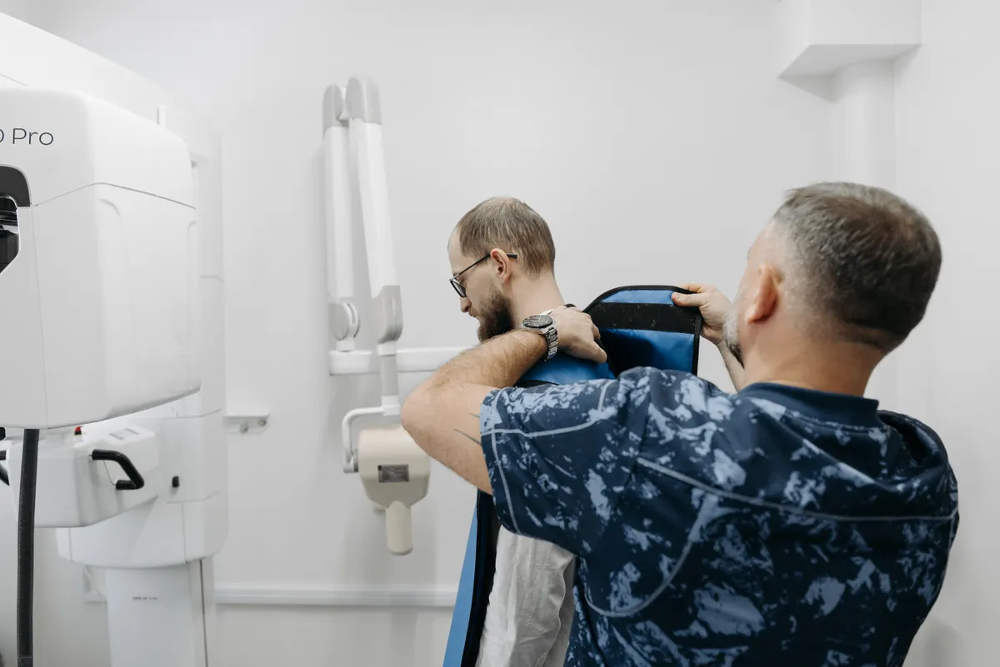

Orthopaedic follow-up X-ray in Randburg
A treating clinician may request repeat X-rays to review alignment or other visible bone changes after an injury, reduction, immobilisation, procedure or operation. The clinician—not the website—sets the body area, views and follow-up timing.
Bring the clinical request: InsureSPR must confirm the written request, supported views, comparison-image process, price and appointment time. A follow-up X-ray is imaging, not an orthopaedic consultation or treatment decision.

Keep the follow-up question intact
The requested area, views and timing come from the treating clinician.
- Refer
Use the clinician’s written request for the exact follow-up examination.
- Confirm
Staff confirm scope, prior-image handling and the appointment.
- Return
The approved report route supports follow-up with the treating clinician.
Orthopaedic follow-up X-ray: practical answers
This route preserves the treating clinician’s request without making promises the practice has not approved.
- What is this service?
- Repeat plain X-ray imaging of a specified bone or joint area after treatment, immobilisation or surgery, when requested by the treating clinician.
- Who is it for?
- People who have a written follow-up request stating the body area and examination needed for their ongoing orthopaedic care.
- What is outside this route?
- The X-ray does not replace an orthopaedic consultation, remove a cast, change weight-bearing instructions or decide treatment. New severe pain, loss of circulation or feeling, or another emergency concern needs appropriate urgent care.
- How much does it cost?
- Practice confirmation required. No public follow-up X-ray price has been approved.
- Do I need a referral or request?
- Yes. Expect a written, signed request from the treating or otherwise authorised healthcare professional. The request should identify the examination and clinical question.
- Is medical aid accepted or is it self-pay?
- Practice confirmation required. Medical-aid claims, authorisation and self-pay arrangements have not been approved for publication.
- Appointment or walk-in?
- This is a request-based route. Staff must confirm that the follow-up examination and preferred date are supported before you attend.
- What should I bring or disclose?
- Bring the original request and any previous images, reports or operation details the practice asks for. Follow the treating clinician’s instructions about casts, braces or mobility aids. Tell the clinical team privately if you are or may be pregnant.
- How long does it take?
- Practice confirmation required. Positioning and the number of views depend on the written request; no duration has been approved.
- How and when are results provided?
- Practice confirmation required. Ask whether the report and images go to you, the treating clinician or both, and when follow-up should occur.
- Where is it and what should I do next?
- InsureSPR is at 7 Malibongwe Drive, EmedCentre, Randburg. Submit the follow-up request, wait for confirmation, and keep the treating clinician’s next appointment instructions.